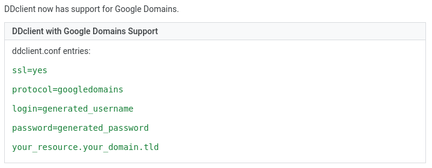

It’s trickier to work with, so there is a bit more that can be learned.
Raspbian makes this task a lot easier with the help of pivpn, but that takes the fun out of it.
Epel-release is not actually compatible with aarch64, so we’re forced to use the more challenging CentOS 7 instead of CentOS 8.
Plus rpmforge is dead, so the stuff I need will be missing from compatible repos, and it will need to be installed from source.
After this is done I’ll definitely want to play around some more with CentOS, and if I eventually decide I prefer Raspbian I’ll just buy another Pi, since they’re extremely cheap.
sudo yum -y install \
perl \
perl-Net-DNS \
perl-IO-Socket-SSL \
perl-IO-Socket-INET6 \
perl-JSON-PP \
perl-File-Temp \
wget \
lzo-devel \
pam-devel \
http://repo.openfusion.net/centos7-x86_64/perl-Data-Validate-IP-0.27-1.of.el7.noarch.rpm \
http://repo.openfusion.net/centos7-x86_64/perl-Net-IP-1.26-1.of.el7.noarch.rpm
sudo yum group install “Development Tools”
wget http://www.openssl.org/source/openssl-1.1.1g.tar.gz
tar -xvzf openssl-1.1.1g.tar.gz
cd openssl-1.1.1g
./config –prefix=/usr/
make
sudo make install
cd ~
wget https://swupdate.openvpn.org/community/releases/openvpn-2.5.0.tar.gz
tar -zxf openvpn-2.5.0.tar.gz
cd openvpn-2.5.0
./configure
make
sudo make install
cd ~
Enable Dynamic DNS for Your Domain
Get and Extract ddclient Tarball
wget https://github.com/ddclient/ddclient/archive/v3.9.1.tar.gz
tar xvfa v3.9.1.tar.gz
cd ddclient-3.9.1
sudo cp ddclient /usr/sbin/
sudo mkdir /etc/ddclient
sudo mkdir /var/cache/ddclient
sudo cp sample-etc_ddclient.conf /etc/ddclient/ddclient.conf
cd ~
Edit /etc/ddclient/ddclient.conf with your preferred text editor

Test ddclient for Errors
sudo ddclient -daemon=0 -debug -verbose -noquietEnable ddclient Service
sudo cp sample-etc_systemd.service /etc/systemd/system/ddclient.service
sudo systemctl enable ddclient.service
sudo systemctl start ddclient.serviceEnable Kernel IP Forwarding
echo 1 > /proc/sys/net/ipv4/ip_forwardEdit /etc/sysctl.conf with your preferred text editor
Set Firewall settings
sudo firewall-cmd --add-service openvpn
sudo firewall-cmd --permanent --add-service openvpn
sudo firewall-cmd --add-masquerade
sudo firewall-cmd --permanent --add-masqueradeTest Firewall for Errors
firewall-cmd --list-services
firewall-cmd --query-masqueradeDownload Easy-RSA
wget https://github.com/OpenVPN/easy-rsa/archive/v3.0.8.tar.gz
tar -zxf v3.0.8.tar.gzCopy Sample Server Config
wget https://raw.githubusercontent.com/OpenVPN/openvpn/master/sample/sample-config-files/server.confEdit /etc/openvpn/server.conf with your preferred text editor
Put Config in /etc/openvpn and rename it to the following
If directory doesn’t exist
Edit ~/easy-rsa-3.0.8/easyrsa3/vars.example with your preferred text editor and save as vars
Generate Diffie-Hellman
sudo openssl dhparam -out /etc/openvpn/dh2048.pem 2048Generate CA and server
cd ~/easy-rsa-3.0.8/easyrsa3
./easyrsa init-pki
./easyrsa build-ca
sudo cp ~/easy-rsa-3.0.8/easyrsa3/pki/ca.crt /etc/openvpn/
./easyrsa gen-req server nopass
./easyrsa sign-req server server
sudo cp ~/easy-rsa-3.0.8/easyrsa3/pki/issued/server.crt /etc/openvpn/
sudo cp ~/easy-rsa-3.0.8/easyrsa3/pki/private/server.key /etc/openvpn/
openvpn --genkey secret ta.key
sudo cp ta.key /etc/openvpn/
cp ta.key ~Generate a client
mkdir ~/newclient
mv ~/ta.key ~/newclient/
./easyrsa gen-req client1 nopass
cp ./pki/private/client1.key ~/newclient
./easyrsa sign-req client client1
cp ./pki/issued/client1.crt ~/newclient
cp ~/easy-rsa-3.0.8/easyrsa3/pki/ca.crt ~/newclient
cd ~
wget https://raw.githubusercontent.com/openvpn/openvpn/master/sample/sample-config-files/client.conf
mv client.conf newclient/client1.ovpnEdit client1.ovpn with your preferred text editor
Combine the Client Config
cd ~/newclient
echo “” >> client1.ovpn
cat ca.crt >> client1.ovpn
echo “ ” >> client1.ovpn
echo “” >> client1.ovpn
cat client1.crt >> client1.ovpn
echo “ ” >> client1.ovpn
echo “” >> client1.ovpn
cat client1.key >> client1.ovpn
echo “ ” >> client1.ovpn
echo “<tls-auth>” >> client1.ovpn
cat ta.key >> client1.ovpn
echo “</tls-auth>” >> client1.ovpnDownload the Client Config
scp paige@192.168.0.42:newclient/client1.conf .cd ~
sudo rm -rf v3.9.1.tar.gz \
ddclient-3.9.1 \
openssl-1.1.1g.tar.gz \
openssl-1.1.1g \
openvpn-2.5.0.tar.gz \
openvpn-2.5.0 \
newclientSometimes when you build and compile OpenVPN from source, it doesn’t get registered by systemd.
To fix this do the following.
Create a file at /etc/systemd/system/ called openvpn@server.service with the following data.
[Unit]
Description=OpenVPN Robust And Highly Flexible Tunneling Application On %I
After=syslog.target network.target
[Service]
Type=forking
PrivateTmp=true
ExecStart=/usr/local/sbin/openvpn –daemon –cd /etc/openvpn/ –config /etc/openvpn/server-udp-1194.conf
[Install]
WantedBy=multi-user.targetEnable this new service
sudo systemctl daemon-reload
sudo systemctl enable openvpn@server.serviceReboot
sudo reboot now